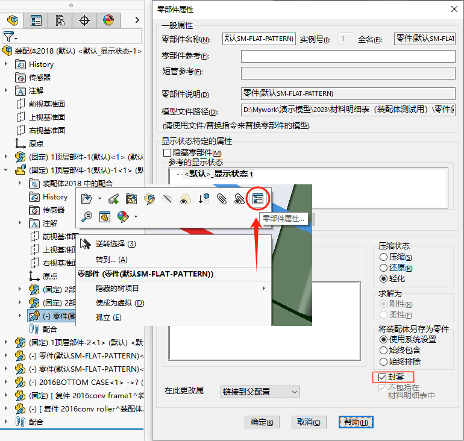

SOLIDWORKS封套
设置
【右键-属性-封套】
功能
封套有两个主要功能： 您可以将封套用作参考零部件和选择工具。
作为参考物体
假设您正在设计用作打印机子装配体的电路板装配体。您可以将打印机的底部外壳作为封套插入，在设计电路板装配体时引用。 由于外壳是一个封套，它不会在电路板装配体的材料明细表中出现，也不会用在质量属性计算中。
作为选择工具
此功能使您可以基于零部件的位置选择零、展示或者隐藏部件，而此位置是相对于封套实体（内部、外部或交叉）而言的。 您可以单独使用封套快速更改装配体零部件的可见性或者为其他编辑操作（如压缩、复制和删除）选择零部件。 使用 高级选择，您就可以结合其他零部件特征使用封套选择零部件。

封套发布程序
2021新功能：
您可以使用【工具-封套发布程序 】工具将顶层装配体中的零部件作为封套包含在子装配体中。
您可以独立于顶层装配体，在子装配体中，将发布的封套用作参考零部件。 封套零部件将从顶层装配体继承更改。